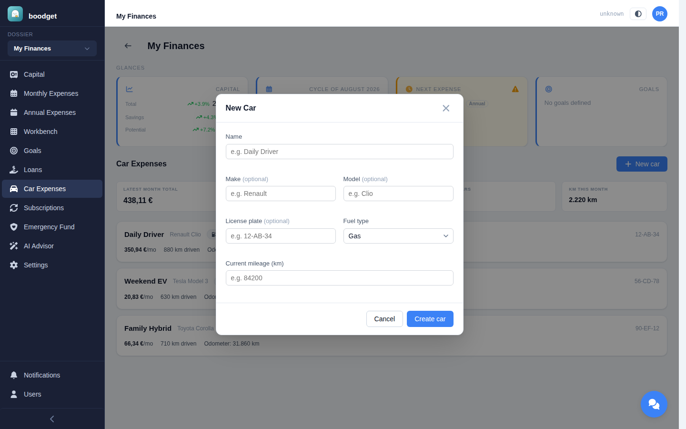
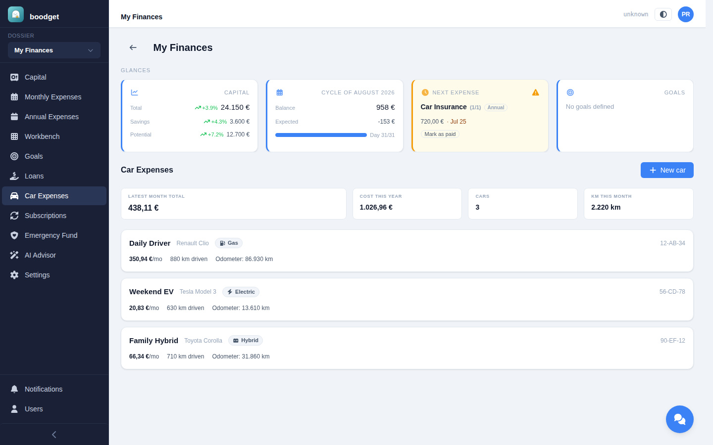
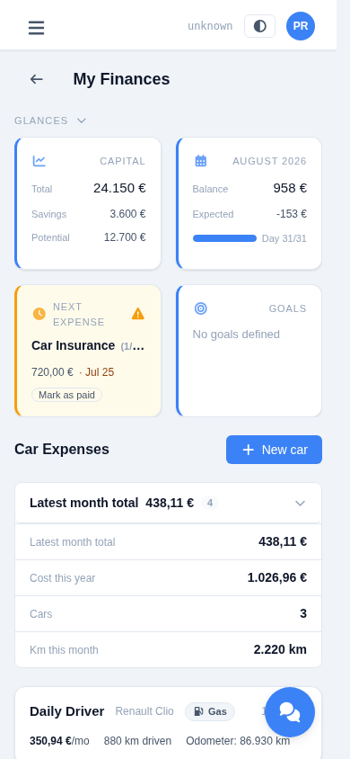
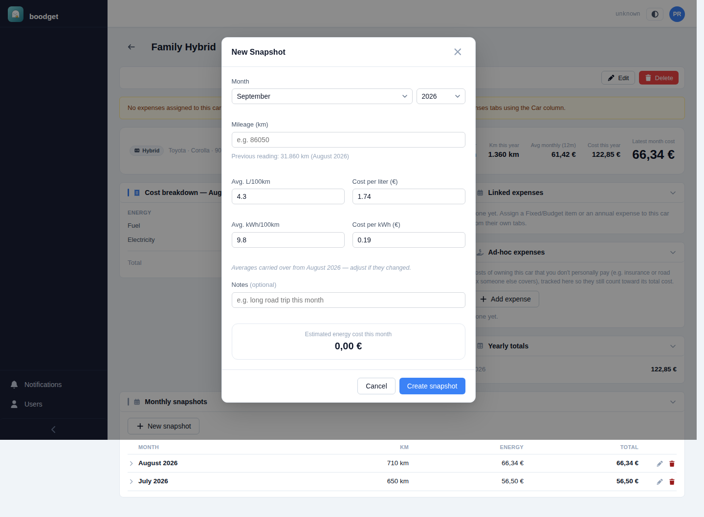
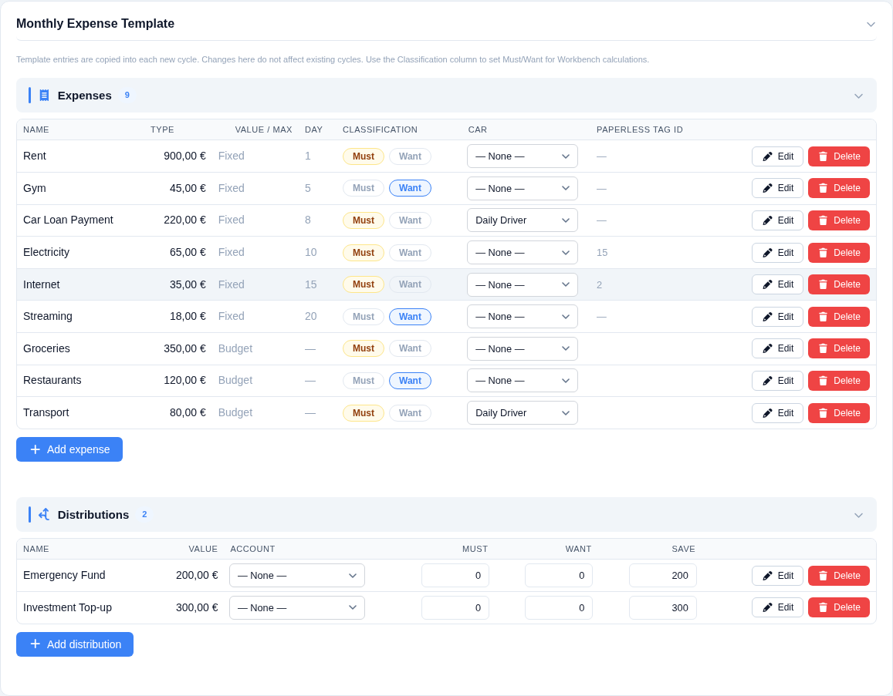
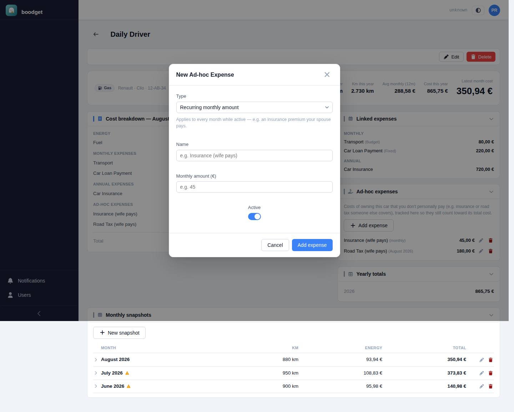
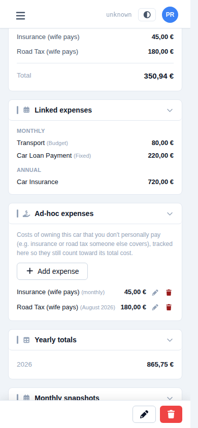
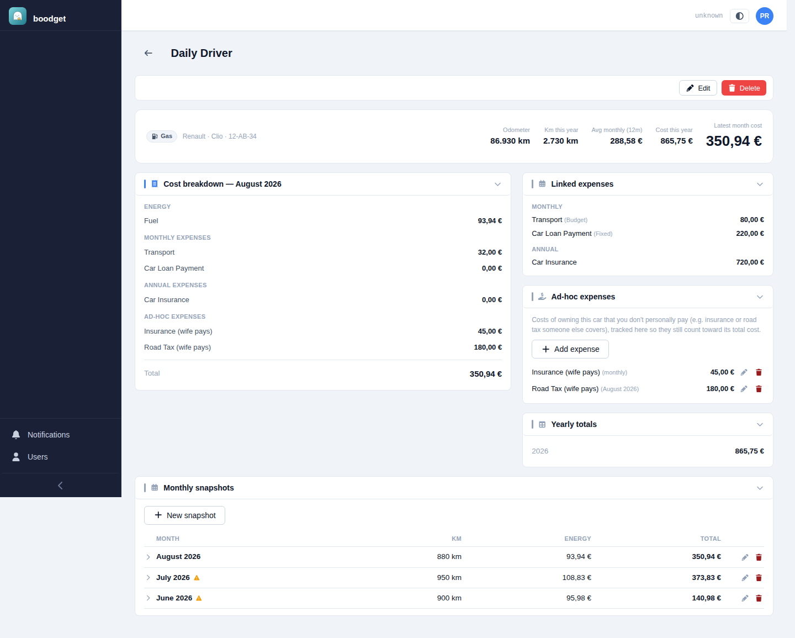

Tracking what a car actually costs
Car Expenses tells you what a vehicle really costs — month by month and year by year — from three sources: the fuel/energy you log yourself, existing Monthly and Annual Expense items you tag to it, and ad-hoc costs someone else pays that never show up anywhere else in the dossier. Every figure is actual spend, never a budgeted estimate. This page walks through setting it up and reading the result, step by step.
Give it a name and a required fuel type — electric, hybrid, or gas, which decides which snapshot fields matter later. License plate, make, and model are optional. Current mileage is the baseline for the car's first snapshot; every later snapshot uses the previous one's reading instead, so you only ever enter it once. A dossier can track several cars independently.

A summary strip totals the latest month's cost across every car, this year's cost so far, how many cars you're tracking, and kilometres driven this month. Each car below it shows as a row with its fuel type, monthly cost, kilometres driven, and current odometer reading — an amber badge appears when a car's latest month is still missing linked-expense data.


Once a month, record the odometer reading plus the average consumption and price for that month — L/100km and cost per liter for a gas or hybrid car, kWh/100km and cost per kWh for an electric or hybrid one. A hybrid fills in both. Kilometres driven is worked out automatically from the previous snapshot's reading (or the car's starting mileage for the first one), and a live preview shows the resulting energy cost as you type. The four averages carry over from your last snapshot as an editable starting point, so most months you're only updating the odometer.

Insurance, a car loan payment, road tax, a fuel or maintenance budget — if it's already a line in your Monthly or Annual Expense Template, tag it to the car from a Car column right there in Settings, instead of re-entering it. The tag is purely additive: the item keeps working everywhere else in the app exactly as before (cycles, budgets, Emergency Fund) — it's just a lens Car Expenses uses to pull in what actually got paid or spent, never the full budgeted amount. A Budget item that goes unused some months never inflates the car's cost.

Some real costs of owning a car never have a home anywhere else in the dossier — a spouse covering the insurance or road tax out of their own, untracked money, for instance. Log those directly against the car as an ad-hoc expense: either a recurring monthly amount that applies every month while active, or a one-off amount for a specific month, like a lump-sum tax payment. Either way it's a real, known figure — folded straight into the car's total cost, never treated as a gap the way a missing linked-expense entry is.


A car's detail page adds up every source into one cost breakdown for the latest month — energy, tagged Monthly and Annual expenses, and ad-hoc expenses — alongside the linked-expense and ad-hoc lists themselves, a running yearly total, and an expandable monthly snapshots table going back as far as you've logged. If a calendar month has no expense cycle covering it yet, its linked-expense figures show as a muted — rather than a false €0,00 — the total is a floor for that month, not a final number, until a cycle catches up.
